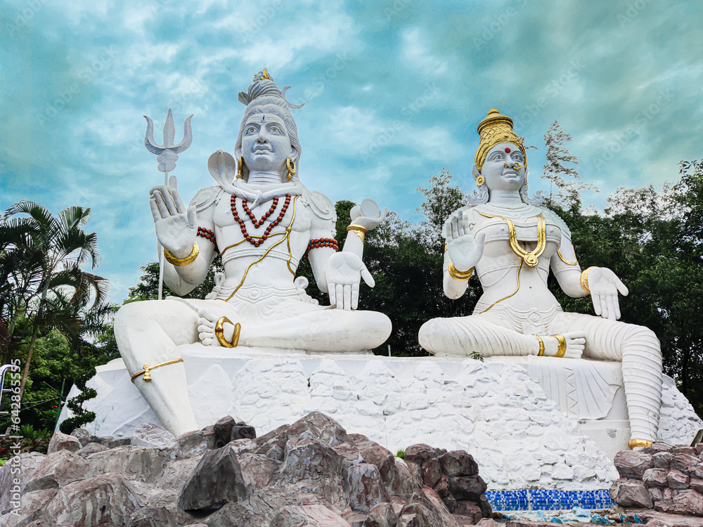
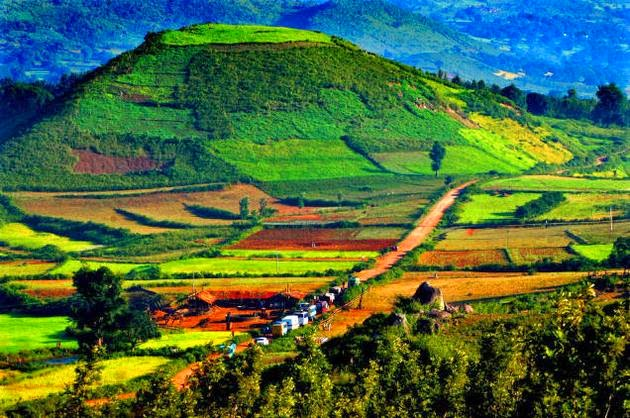

"Famous Tourism Spots in"
List
- Borra Caves
- Kailasagiri
- Araku Valley
Borra Caves
If you're a history lover, the Borra Caves are one of the best tourist attractions that Vizag has to offer for you. Nestled amidst the Ananthagiri Hills in Araku Valley, the Borra Caves are over thousands of years old and are the biggest among all the caves found in India. The caves are basically karstic limestone structures extending to a depth of 80 m (260 ft), and are considered the deepest caves in India.

Kailasagiri
Kailasagiri is a picturesque hill over looking the sea is a natural gift with 350 acres available has been developed into a lush green park has a panoramic sea view with a serene atmosphere with water sprinklers, microwave repeater station, beautiful garden locations and recent flower clock titanic view point making it.
Araku Valley
Araku is famous for its coffee plantations surrounded by beautiful gardens, streams, waterfalls and valleys that are covered with lush green forests. Situated in the Eastern Ghats, the hill station is about 112 km southeast of Vishakhapatnam.Apart from being a picturesque hill town, Araku is famous for its indigenous tribal culture. Various tribal communities such as Khord, B. Mallis, Bagata, Gadaba, Koya and Savara inhabit this region. The Tribal Museum showcases the daily life of these tribes, their culture and food habits.
